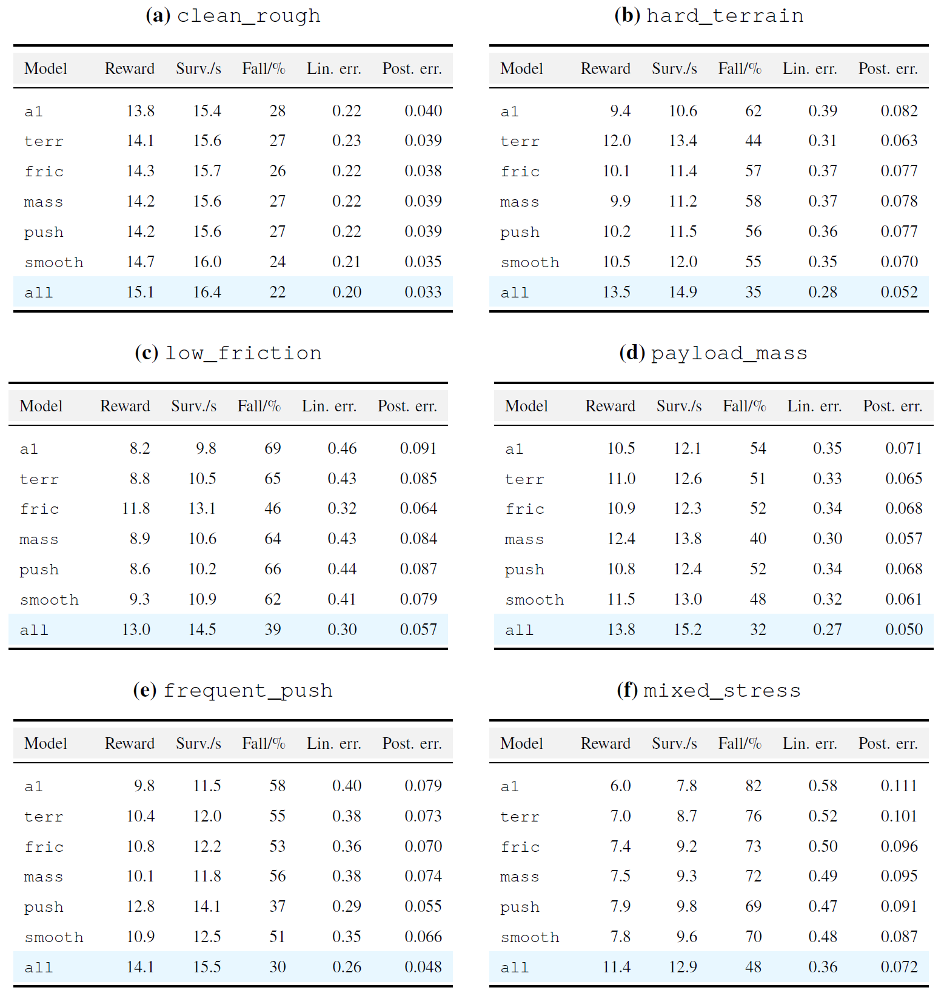
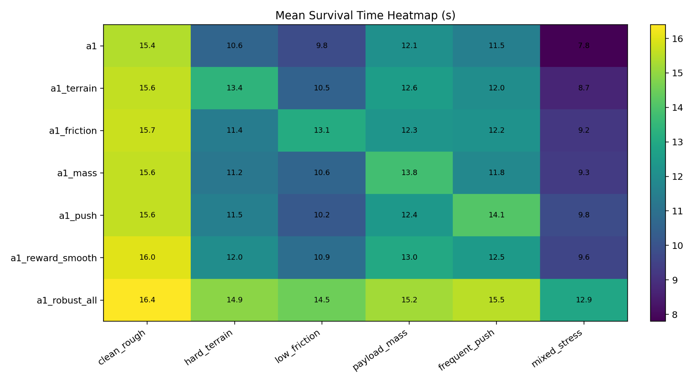
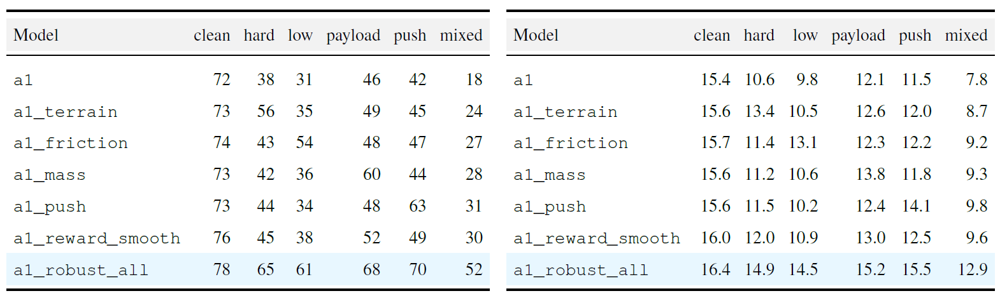
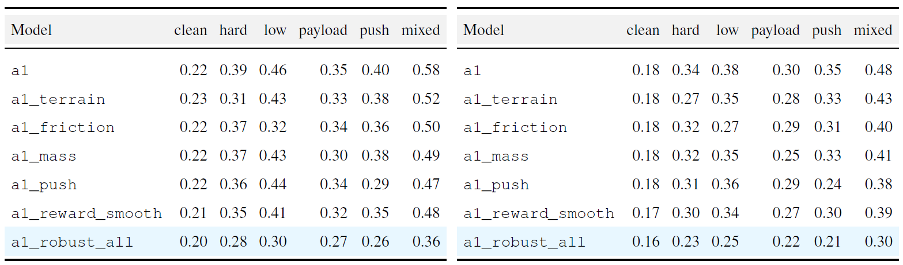
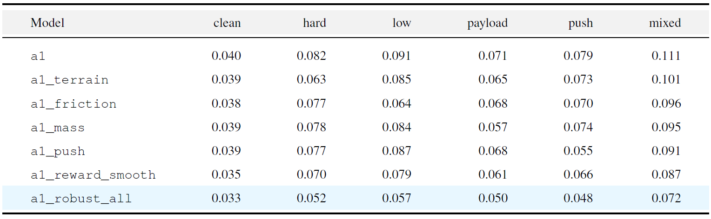

- Main Experiment

Performance comparison in complex scenarios. Our robustly optimized model shows stronger generalization ablity.
Reinforcement-learning controllers for quadruped robots can acquire agile locomotion policies from large-scale simulation, but policies trained in a nominal rough-terrain setting often fail when terrain geometry, contact friction, payload mass, and external perturbations change simultaneously. This work studies a central question: how can an existing Legged Gym PPO locomotion pipeline be systematically modified so that the resulting Unitree A1 policy is not merely successful on the training terrain, but robust under coupled terrain and dynamics shifts? We formulate robustness improvement as a distribution-expansion problem over terrain, physical parameters, and disturbance processes, and we implement a three-component solution within Isaac Gym and Legged Gym: complex-terrain enrichment, domain randomization of friction and base mass with external pushes, and reward shaping for posture stability and action smoothness.

Comparison of survival rate in various conditions. Our proposed robust model achieves superior performance in terms of survival time across all scenarios.



